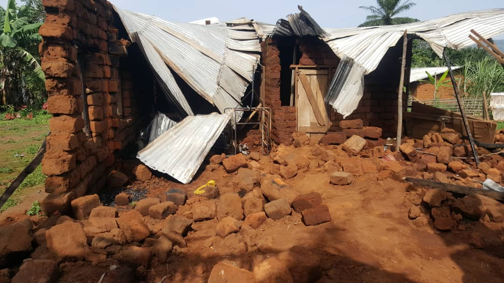
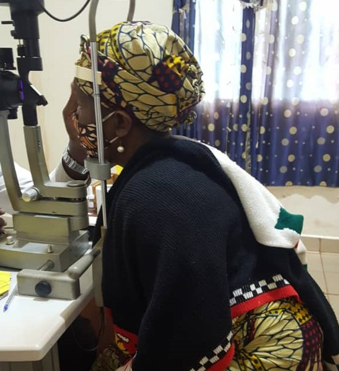

URGENT CAUSE
Recent Environmental Disasters
At the beginning of the rainy season, heavy storm destroyed the homes of some struggling widows in several communities. As a family we are raising funds to support them. Join the movement.
0%
Raised: 0 XAF
Goal: 0 XAF
DONATE NOW
OUR CAUSES
Together, let us all donate to Struggling Widows around our communities.
Let them no longer endure life in stressful conditions.
Together, we can save more lives.

ENVIRONMENTAL DISASTERS
At the beginning of the rainy season, heavy storm destroyed the homes of some struggling widows in several communities. As a family we are raising funds to support them. Join the movement and donate for two or more widows.
0%
Raised: 0 XAF
Goal: 0 XAF
DONATE NOW

CATARACT SCREENING
Earlier this year we had planned to take some widows to do cataract screening. This procedure will help improve their vision, for them to carry out daily activities better. Join the movement and donate for two or more widows.
0%
Raised: 0 XAF
Goal: 0 XAF